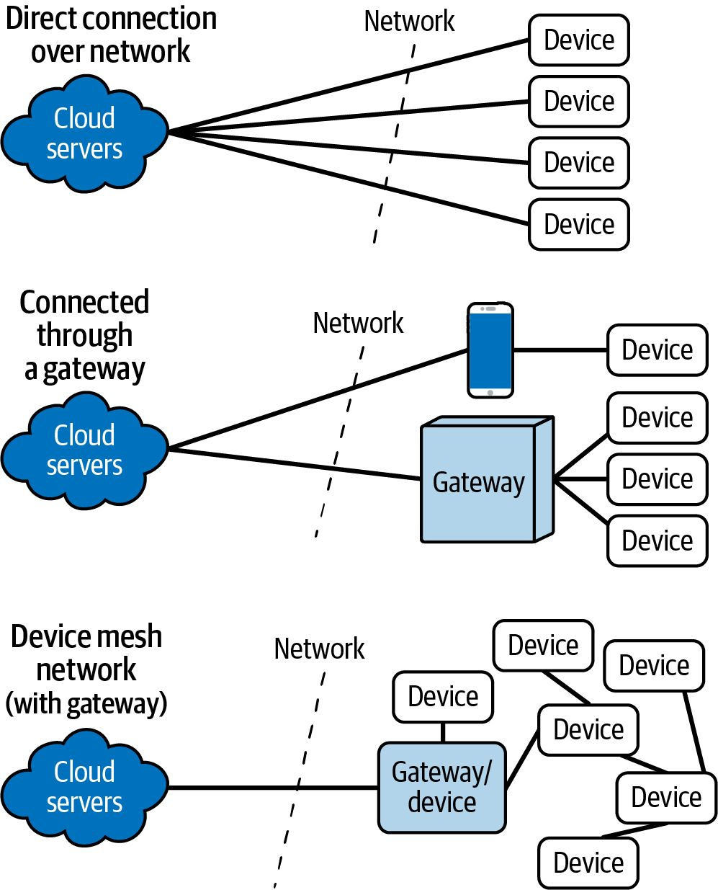
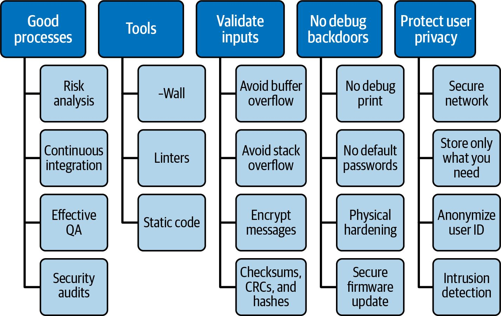
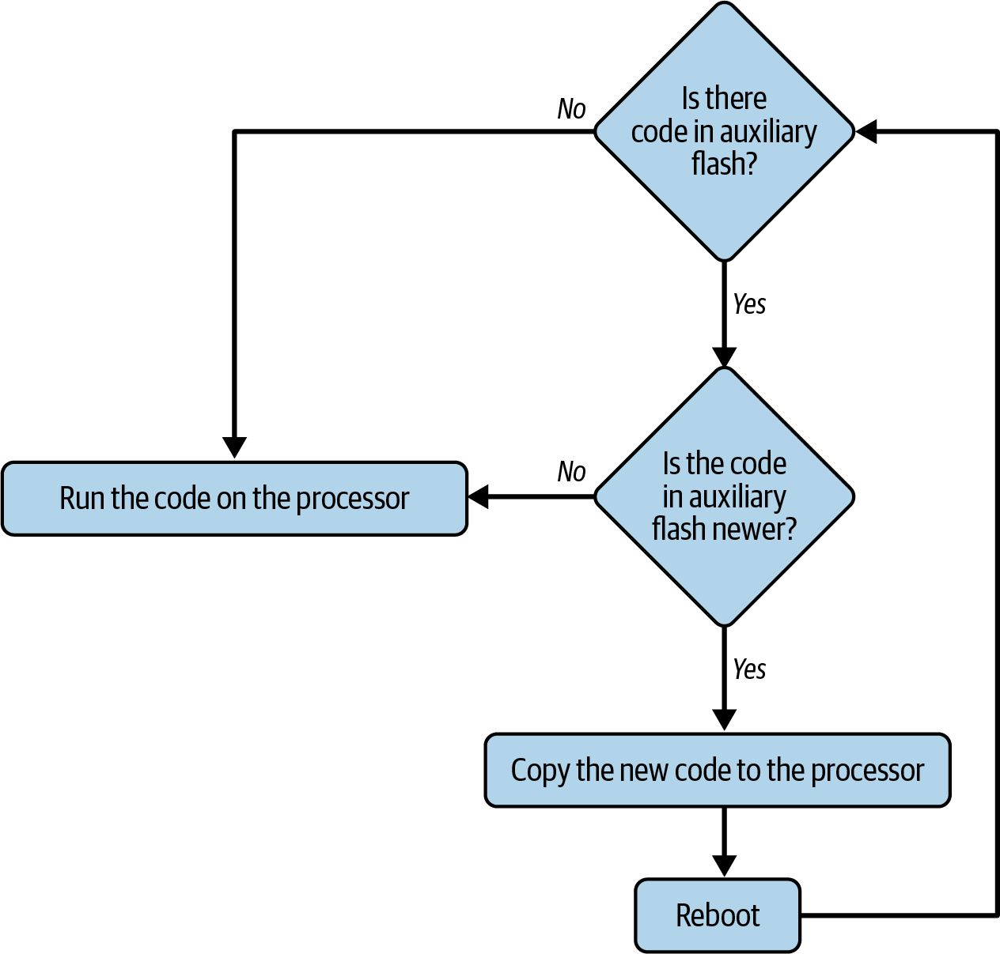
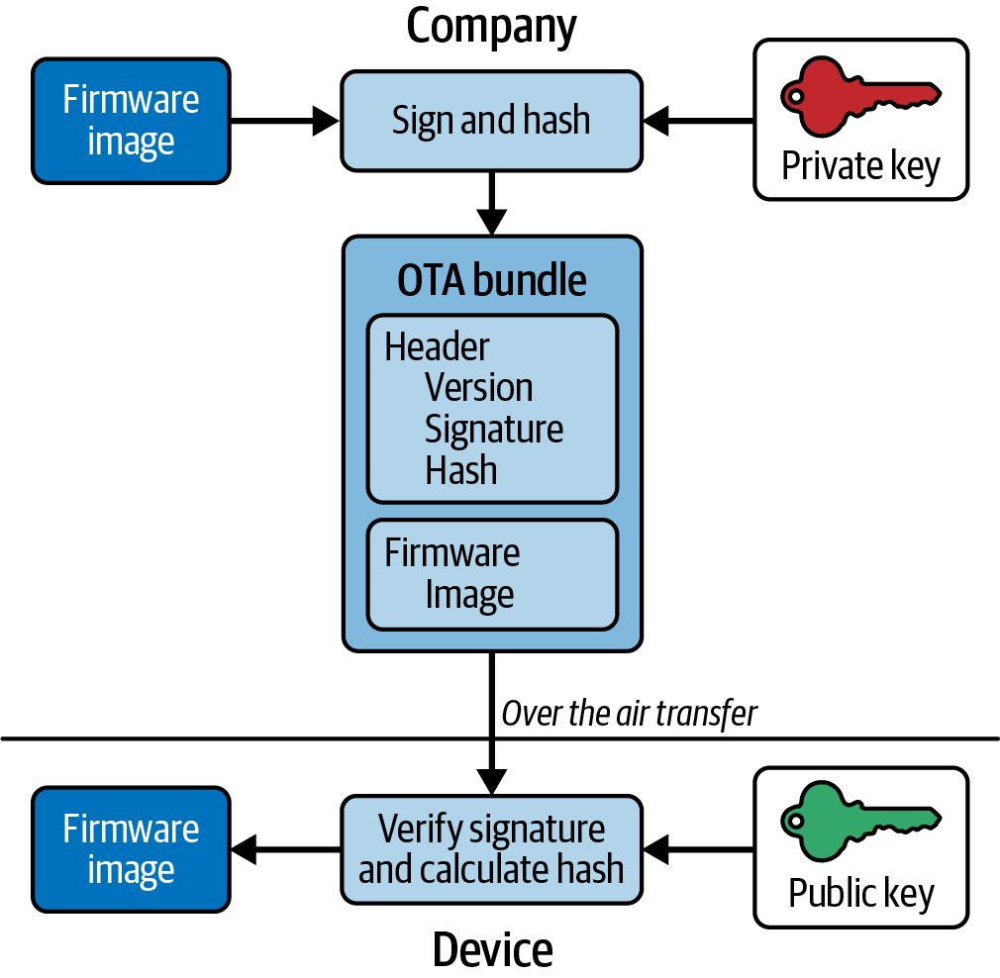
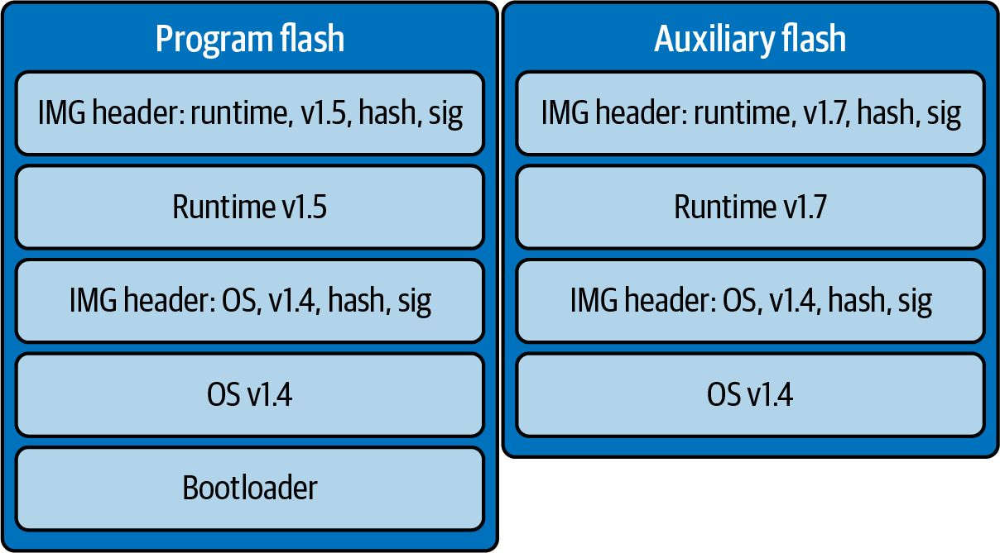
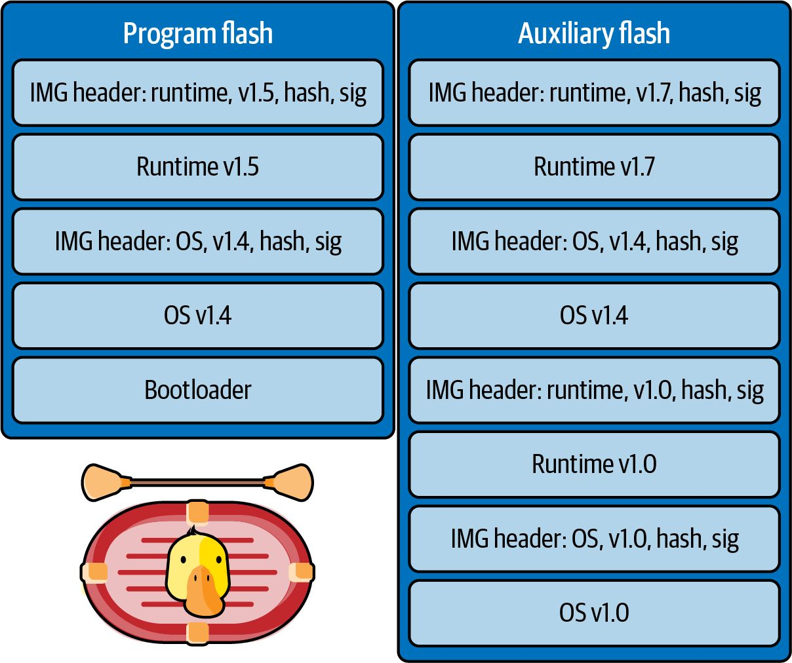

第12章 数学
Making Embedded Systems — Elecia White 著 | AI 辅助翻译
数学
当我们在上一章中讨论资源交换时，你必须在 RAM、代码空间和处理周期之间做出选择。交换这些资源的作用有限。有时你需要让代码运行得更快。虽然我不知道你的系统需要什么，但我猜测你需要实现一些数学运算（因为这是处理器擅长的领域）。 你的系统做的事情越少，它所需要的资源就越少。有时我们会混淆准确度（这很重要）和精度（可能过度）。如果你能量化你期望的数据范围以及你的误差预算，那么有一些有用的方法可以为各种算法减少不必要的精度，从而节省 RAM 和处理周期。
准确度与精度
准确度衡量的是你有多正确。精度是你答案中显示的位数。两者都有程度之分；一个答案可以比另一个更准确和/或更精确。一个真正准确的答案知道自己的局限性。例如，电子的质量是多少？
电子的质量
12.12345124 kg 10⁻³⁰ kg 9.109 × 10⁻³¹ kg 9.1090000001 × 10⁻³¹ kg (9.1092 ± 0.0002) × 10⁻³¹ kg 是否准确？ 否
比 12 kg 准确得多，对大多数场合来说足够准确
更加准确
与前一个答案准确度相同
是的，目前最佳答案
是否精确？
愚蠢地精确
不精确
精确
无用地精确
精度可能是噪声。如果额外的精度位没有任何意义，它们会不必要地复杂化你的系统，占用宝贵的 RAM，浪费处理器周期。当你在数据上实现复杂算法和执行数学运算时，你需要确定需要多少精度才能维持足够的产品准确度。
识别快速和慢速操作
优化系统以快速执行数学运算需要你对编译器和处理器有更多了解。一旦你理解了哪些操作执行快速（以及哪些操作只占一行代码，但编译后却要使用两个库和荒谬的处理量），你就有了优化系统的基础。 那么，加法和减法是快的。位移通常也是快的。除法非常慢。任何涉及浮点数的运算都极慢，除非你有浮点运算单元（FPU）。 乘法呢？在 DSP 上，它很快：乘法和加法构成一条指令（MAC，乘法累加）。在非 DSP 上（例如，Arm 或你的 PC），乘法的速度介于加法和除法之间，但更接近加法。 对于许多处理器来说，除法不像其他算术运算符那样内置于硬件中。在这些处理器上，除法运算符会调用一个库函数——通常是一个相当大的函数，你可以通过查看映射文件来判断。 一个操作可以用一行代码描述并不意味着它在处理器上运行的时间很短。第 7 章提到模运算对循环缓冲区很有用。如果你想在循环的每 n 次迭代时执行某些操作，它也很有用： for (i=0; i<100; i++) { if ((i%10) == 0) { printf("%d percent done.", i); } } 然而，那个 %10 实际上是一个隐藏的除法，一条相对昂贵的指令（虽然远不及 printf 的处理成本——但那是另一个话题）。如果你将间隔设为 2 的幂，你可以用一条廉价（单指令）的按位逻辑操作来替代模运算（原因见第 205 页"带符号数的表示"）： for (i=0; i<100; i++) { if (!(i & 0x07)) { // 这将每 8 次迭代打印一次 printf("%d percent done.", i); } } 一般来说，当移位数是常量时，位移操作只需一个处理器周期。如果你能将常量保持为 2 的幂，以便用整数位移替代算术运算，这是一种廉价的除法和乘法方式。（我们稍后在"伪浮点数"（第 345 页）中会更详细地讨论这一点。） 使用常量比使用变量更快。但它们需要是真正的常量（C 语言中的 #define），而不是常量变量（const），大多数编译器会将后者加载到寄存器中，而不是将数字直接放入汇编文件中。现在你明白了为什么嵌入式系统程序员仍然痴迷于丑陋的 #define 语句。 这些规则有很多，随着时间你会学会它们。一旦你对处理器和编译器的细节有了感觉，考虑到系统真正需要什么以及如何实现，很多都是常识。让我们看一个常见的系统示例，看看不同的选择如何改变算法。
求平均值
对许多信号来说，你需要计算平均值（即均值）和标准差。有时这是你的输出。有时它只是一个合理性检查，以确保你的信号没有被噪声过度破坏。 使用 N 点滑动平均值，你可以计算最后 N 个点的平均值。你甚至不需要每次都把它们全部加起来再除以 N；你可以加上新点并减去最旧的点（就像 FIFO 一样）： newAverage = lastAverage + (newSample/length) - (oldestSample/length); 然而，你必须在每一步都执行除法。而且，如果你对大量小值样本求平均，这种除法可能会截断结果，给你一个不准确的平均值（参见边栏"整数数学的缺点"（第 328 页））。 滑动平均的另一个缺点是你需要保持样本缓冲区完整，直到最旧的样本离开平均值。如果平均值是在大量样本上计算的，这可能是一个很大的 RAM 缓冲区。 与其直接跳入优化，不如退后一步，考虑系统的需求。你是否需要在每个时间步都获得新的平均值？还是可以在一段时间内使用相同的值？如果是后者，你可能可以实现块平均而不是滑动平均。在块平均中，你累积一定数量的样本，直到需要平均值时才重新开始计算： struct sAve { int32_t blockSum; uint16_t numSamples; }; void ClearAverage(struct sAve *ave) { ave->blockSum = 0; ave->numSamples = 0; } void AddSampleToAverage(struct sAve *ave, int16_t newSample) { ave->blockSum += newSample; ave->numSamples++; } int16_t GetAverage(struct sAve *ave) { int16_t average = ave->blockSum/ave->numSamples; ClearAverage(ave); return average; }

图 12-1 — 显示了一组样本的滑动平均（超过 5 个样本）和块平均（也是 5 个样本）。注意，每次块平均变化时，它与该点的滑动平均结果相同。滑动平均变化更快，因此在其他四个时间步中它能更准确地表示数据。如果你只需要每第五个（或第一百个）时间步的平均值，那么块平均与滑动平均一样准确，但 RAM 和处理器周期的成本要低得多。
图 12-1 — 滑动平均跟踪每个样本，而块平均在多个样本之间保持恒定。
不同的平均方法：累积平均和中位数
有一种做滑动平均的方法不需要 RAM 缓冲区和不断重新计算总和：累积平均将所有过去值视为等于均值。每个新值按以下方式计算： int16_t UpdatedCumulativeAverage(int16_t prevAve, int16_t newSample, int16_t numSamples) { int32_t sum = (numSamples-1) * prevAve; sum += newSample; return (sum/numSamples); } 虽然不是精确的算术平均值，但通常非常接近，如图 12-2 所示。它往往对信号的突然变化响应稍慢，比滑动平均移动得更慢。

图 12-2 — 滑动平均表示信号的 5 点算术平均值。累积平均计算起来简单得多。中位数需要更多计算，但能抵抗毛刺。
另一种平均方法是中位数，其目标是取中点值。这能移除数据中的异常值和临时毛刺（如图 12-2 样本数据中的值 10）。然而，这需要对数据进行排序并选择中间值，这需要更多 RAM（保留所有数据）和更多处理（排序比加减法昂贵得多）。 另一方面，如果你有一个 ADC 偶尔因无线电干扰而产生毛刺，中位数滤波器就很棒，只需保持小规模，在 3 或 5 点范围内。
整数数学的缺点
4/4 等于多少？1。很好。5/4 等于多少？嗯，根据处理器，那仍然是 1。6/4 和 7/4 也是 1。整数除法截断数字，就像对浮点数运行 floor() 函数一样。这可能导致严重问题。
例如，如果你优化了滑动平均以避免不必要的除法：
newAverage = lastAverage + ((newSample- oldestSample)/length); 如果你的样本都差不多相同，你的平均值将会非常错误。图 12-3 显示了三种不同形式的滑动平均。首先是浮点版本，它相当好地跟踪信号（尽管当然有轻微延迟）。接下来是示例实现，但有整数截断，因为最旧和最新的样本分别被长度除。它跟踪得相当好，但你可以看到一些不准确之处。最后是我刚才展示的带截断的实现。它节省了一个昂贵的除法步骤，但结果是垃圾。 你想节省资源，但不是产生垃圾。

图 12-3 — 滑动平均中的截断失败。
解决方案说起来很简单：大值应该被小得多的值除；它们不应该在数量级上相似。 实现这个解决方案比说出来更难。如果你知道会遇到这个问题，你可以选择增大分子的数量级（即，将每个样本乘以某个固定常数）。为了求平均，乘以任何大于平均值中样本数量的常数就足够了。在我们的情况下这是可行的。得到的平均值会按该倍数偏移，所以如果你需要获取实际值，你需要在之后除以这个乘法因子。如果你只是比较值，你永远不需要做除法，因为它们的相对值是正确的。 你可以选择任何常数，只要你不将样本乘到太大而无法放入变量的程度。除法可能导致下溢，而乘法可能导致溢出，这同样会导致异常行为。这意味着你需要知道预期接收的范围。利用你对系统的了解来优化它非常有用，但这可能导致系统变得脆弱，看似微小的更改（例如，输入范围变化 10%）也会导致错误。 因此，整数数学的缺点是，你需要了解并依赖输入值的范围，以确保你的准确度不会因缺乏精度而降低。
使用已有算法
现在你对什么操作快（加法、移位，也许还有乘法）有了一些感觉，我将分享当你需要以最少的资源实现一个算法时最重要的事情：查一下。如果是标准算法，可以在线搜索或拿出一本数值计算的书。如果有人已经投入时间和精力解释了如何减少处理周期或 RAM 使用，那就利用他们的工作。确保注意版权，但大多数教学材料的存在就是为了让人使用。网上有很多关于优化某些算法的内容，但"扩展阅读"（第 352 页）中描述的一些可信资源值得放在书架上，以备需要时使用。 实现一个算法可能有几种方式，但只有一两种能节省你需要保留的资源。例如，让我们看看标准差。 标准差（σ）衡量样本集中各个样本偏离其平均值的程度。标准差使用组中的每个样本（xᵢ）、组的均值或平均值（x_mean）以及集合中的样本数（N）来计算，如公式 12-1 中的等式所示（虽然不直观，但两个等式是等价的）。 如何让这对你的嵌入式系统友好？嗯，先处理平方根部分。简单的答案是不要计算平方根。虽然这改变了结果的值，但它不会改变结果给出的关于样本变化程度的信息。由于很多人都这样做，未开方的标准差被称为方差。¹
（想想我们通过重新定义目标已经节省了多少处理周期！）
我们可以开始几乎完全按照等式来实现方差：
floatGetVariance(int16_t* samples, uint16_t numSamples, int16_t mean) { uint32_t sumSquares = 0; int32_t tmp; uint32_t i; for (i = 0; i < numSamples; i++) { tmp = samples[i] - mean; sumSquares += tmp*tmp; } return ((float) sumSquares / numSamples); } 注意，均值被传入函数。它已经为此块计算好了。另一段代码已经查看了每个样本，所以这个函数是对数据的第二遍遍历。除了遍历循环两次的低效外，你还必须在缓冲区中保留所有数据，这可能浪费 RAM。 然而，像块平均一样，你可以在进行过程中计算方差，这在公式 12-1 的第二个等式中更清楚地显示。注意，在这个方差计算中，块平均是免费获得的： struct sVar { int32_t sum; ¹ 如果你不熟悉方差的定义（或任何数学运算），查一下。维基百科是一个很好的起点。还有一个页面（计算方差的算法）涵盖了不同的实现技术，包括这里描述的。 uint64_t sumSquares; uint16_t numSamples; }; void AddSampleToVariance (struct sVar *var, int16_t newSample) { var->sum += newSample; var->sumSquares += newSample*newSample; var->numSamples++; } float GetVariance(struct sVar *var, float *average) { float variance; *average = (float) var->sum / var->numSamples; variance = (var->sumSquares - (var->sum * (*average))) / (var->numSamples-1); return variance; } 这个实现有一个问题：变量 sumSquares 可能会变得非常大（即使 sum 在有很多样本时也会变得相当大）。假设代码中的样本是 signed 16-bit，如果我们改用 signed 8-bit 样本。如果你有两个样本，每个值为 127，sumSquares 将是 32,258——接近 15 位。当你有五个最大值样本时，你需要 17 位来存储 sumSquares，这意味着要升级到 32 位变量。如果你使用 16 位值，sumSquares 需要是 64 位变量。使用大变量需要 RAM 和处理周期。 在两次遍历的实现中不会发生这种情况，因为每个样本减去均值使平方和保持合理的小。然而，有一种方法可以做到既不使用大型中间变量，也不对数据进行两次遍历： struct sVar { int16_t mean; int32_t M2; uint16_t numSamples; }; void AddSampleToVariance(struct sVar *var, int16_t newSample) { int16_t delta = newSample - var->mean; var->numSamples++; var->mean += delta/var->numSamples;
var->M2 += delta * (newSample - var->mean); // 使用新的均值
} uint16_t GetVariance(struct sVar *var, int16_t *average) { uint16_t variance = var->M2/var->numSamples;
*average = var->mean; // 滑动平均已经计算好
// 为下一个块做准备
var->numSamples =0; var->mean = 0; var->M2 = 0; return variance; } 我认为如果是我自己，可能想不出这个方法，尤其当我的注意力集中在构建一种方法来查看系统中样本偏离均值的程度时。即使是 Donald E. Knuth 也将其归功于另一位作者的文章（B. P. Welford）。 让我们更详细地看看这段代码。要存储方差的中间变量，你只需要一个大小是样本两倍的变量（所以如果你的样本是 8 位，M2 可以是 16 位）。这种方法让你可以使用与数据大小相同的变量来存储均值（而不是像之前那样依赖于样本数量的 sum 变量）。然而，代码可读性较差，如果你改变 AddSampleToVariance 中代码行的顺序，它就会出错。它还在每次循环时执行一次除法运算；更糟糕的是，计算均值的除法可能出问题，因为 delta 很可能很小——小到整数截断可能导致均值为零。 是的，一切都有后果。有时试图节省处理器周期就像试图紧紧握住气球；你抓得越紧，其他一些地方就越会从你的手指间挤出来。如果你坚持使用被充分理解的算法，很有可能失败分析已经为你做好了。 如果你真的需要知道标准差（而不是方差），有很多近似平方根的方法。维基百科的"平方根计算方法"页面上列出了超过 10 种。选择一两种，然后使用你的性能分析工具将它们与编译器的数学库进行比较。
设计和修改算法
有时你的算法超越简单的数学，却不是在书中能找到的现成配方。实现不同的处理器密集型操作有很多技巧。如果你学习了一些构建块，你就可以自己进行优化。就像烹饪一样，你了解的食谱越多，你的修改就越可能成功。
因式分解多项式
假设你有可以这样实现的东西：
y = A*x + B*x + C*x;
这是三次乘法和两次加法。如果你因式分解你的多项式，你可以用两次加法和一次乘法完成：
y = (A + B + C)*x;
好多了。让我们举一个非线性例子，用因式分解来简化处理负载。这相当于将多项式内外翻转：
A*x³+B*x²+Cx ==> ((Ax+B)x+C)x 左边，如果你将 x 立方并乘以 A，等等，你会做九次乘法和两次加法。如果你用另一种方式，同样的答案只需三次乘法和两次加法。如何构建多项式对最小化处理周期非常重要。²
泰勒级数
多项式很重要，因为它们构成了为算法中复杂步骤建模的一种方式。泰勒级数将函数表示为无限项的和。它适用于大多数函数，包括三角函数（正弦、余弦、正切、反正弦等）、更困难的多项式（x⁻¹）、平方根和对数。随着无穷级数中添加更多项，结果变得更加精确（也更准确）。反过来也一样：你不需要无限多的项来为你的函数生成足够准确的答案。 为一般多项式创建泰勒级数需要相当多的数学知识，超出了本书的范围（比 Horner 方案的轻微技巧要多得多）。然而，你可以轻松地查找算法。例如，正弦函数可以用它的泰勒级数展开式替代（见公式 12-2）。
公式 12-2. 正弦函数的泰勒级数，通过 Horner 方案重排
sin x ≈ x − x³/3! + x⁵/5! − x⁷/7! + ⋯ sin x ≈ x(1 − x²(A + x²(B − Cx²)))，其中 A = 1/3!, B = 1/5!, C = 1/7! 本节中的所有角度以弧度表示。记住 π 弧度 = 180°。 对于四项的泰勒级数，参数值在 π 和 –π 之间的误差很小（0.000003）。如果这个误差仍然太大，你可以添加下一项。 ² 这种方法称为 Horner 方案，由数学家 William George Horner 提出。
设计与修改算法
泰勒级数可以获得更高的精度（加上 x⁹/9!）。或者，如果你能接受更大的误差范围（尤其是在 ±π 的边缘处），你可以使用更少的项数。物理学家通常只取第一项，即近似 sin(x)=x。x 越接近 0，这个近似效果越好。 和之前一样，要真正进行优化，你需要了解你的输入以及系统可接受的误差。如果你的输入范围在 –0.2π 到 0.2π 之间，且你需要 10% 的精度，你可以使用物理学家的近似。或者，如果你需要误差小于 1%，你可以使用泰勒展开的两项。泰勒级数让你能够在处理能力和应用所需的精度之间取得平衡（见图 12-4）。

图 12-4 — 展示正弦泰勒级数不同项数精度的曲线图
由于泰勒级数只使用乘法和加法，因此对处理器的计算压力相对较小。代入常数并使用霍纳方法，我们可以用浮点实现正弦函数的四项展开： xSq = x*x; sinX = x * (1 - xSq * (INVERSE_THREE_FACTORIAL + xSq * (INVERSE_FIVE_FACTORIAL - INVERSE_SEVEN_FACTORIAL * xSq)));
第 12 章：数学
// 或者将其拆解为多个步骤，从末尾开始向前面推进：
tmp = - INVERSE_SEVEN_FACTORIAL * xSq; tmp = xSq * (INVERSE_FIVE_FACTORIAL + tmp); tmp = xSq * (-INVERSE_THREE_FACTORIAL + tmp); sinX = x * (1 - tmp); 为什么必须使用浮点？因为 INVERSE_THREE_FACT 和其他常数需要在零和一之间。不过，有办法可以避免这个问题。
除以常数
除法是相对昂贵的算术步骤。但是当你除以一个常数时，有一些取巧的方法。以正弦的泰勒级数为例，假设你需要除以 3!（即 3 × 2 × 1 = 6）。嗯，这不会太难： uint16_t DivideThreeFactorial(uint16_t input) { const uint16_t denominator = 6; return input/denominator; } 目前，我们先不关心 x 在 ±π 之间的问题。相反，我们用一个更大的数来试验。如果输入是 245，在整数数学中结果将是 40（浮点中 245 / 6 = 40.833）。我暂时不关心这里的截断问题，只关注除法操作本身。有没有办法让它更快？ 移位操作要快得多。遗憾的是，6 不是 2 的幂。然而，还有其他方法可以表示 1/6，例如 2/12 等。我们想要的是一个与 1/6（0.166667）等价的乘数/2的幂组合，至少在某个小误差范围内如此。然后我们可以用输入乘以分子，再对结果进行移位来完成除法。我们用一次乘法和一次移位来换取除法。表 12-1 展示了一些乘数及其对应的 2 的幂除数以及由此产生的误差。
表 12-1. 用 2 的幂除数近似 1/6
乘数 除数 等效移位 结果 % 误差
1 6 无 0.166666667 0
3 16 4 0.1875 12.5 5 32 5 0.15625 6.2 11 64 6 0.171875 3.1 21 128 7 0.164063 1.5 43 256 8 0.167969 0.78 85 512 9 0.166016 0.39 171 1024 10 0.166992 0.19 341 2048 11 0.166504 0.09 683 4096 12 0.166748 0.04
注意，表中的误差每增加一次移位就会减半。因此，如果你实现一个除以 3! 的函数，它可以写成这样：
#define DIVIDE_THREE_FACT_MULT 171 #define DIVIDE_THREE_FACT_SHIFT 10 int16_t DivideThreeFactorial(int16_t input) { int32_t tmp = input * DIVIDE_THREE_FACT_MULT; return (tmp >> DIVIDE_THREE_FACT_SHIFT); } 输入和输出是 16 位的，但需要一个 32 位变量来保存乘法结果。即使使用了更大的临时变量，这个函数仍然比除法更便宜——大概如此。 如果你不做最后的移位，结果可以比截断除法更精确。但你需要记住该值在使用时已经被乘以了 1024。 然而，这种实现有一个很大的缺点：你需要提前知道除数才能构造这个函数。虽然每当你需要除以一个常数时这个方法都很有用，但它不够通用，无法消除所有的除法。
缩放输入
正弦函数接受从 –π 到 π 的输入，并输出从 –1 到 1 的值。如果要避免使用浮点数，这些都相当困难。不过，你可以将所有值乘以一个常数，以获得比整数实现更细的粒度。例如，如果你想在正弦函数中摆脱浮点数，可以将输入范围改为 ±(1024 × π)，并补偿输出因放大了 1024 倍而偏大的问题。 对于满足 f(Ax) = Af(x) 的数学运算，优化非常简单——直接使用缩放后的输入即可。即使对于 f(Ax) = f(A)f(x) 的函数，去除缩放因子也很直接：除以 f(A) 即可。然而，正弦函数不符合这个条件；没有简单的方法可以去除缩放因子。 相反，我们需要确保泰勒展开中的每一项都被 1024 乘且仅乘一次。这意味着每当 x 与 x 相乘时，我们需要除以 1024，这样缩放因子就不会随输入值一起被平方：
xSq = (x*x) >> 10; // 右移 10 位等同于除以 1024
tmp = - DivideSevenFactorial(xSq); tmp = (xSq * (INVERSE_FIVE_FACTORIAL + tmp)) >> 10; tmp = (xSq * (-INVERSE_THREE_FACTORIAL + tmp)) >> 10; sinX = x - ((x * tmp) >> 10); 这里的好消息是，通过缩放，某些步骤中的除法变得更容易了。所有值都必须被乘，包括常数。我们不再乘以 1/3!（本质上即除以 6），而是乘以 1024/3!，大约为 171。由于 5! 是 120，将 1024/120 四舍五入到 8（精确值 8.533）会带来更多误差。最后一项（7! = 5040）仍然很大，因此需要一些实际的除法，不过仍然是除以常数。由于除以的是一个较小的常数，会带来一些误差，如图 12-5 所示。

图 12-5 — 使用泰勒级数缩放输入时的误差（0 到 π）
有一些方法可以减轻这些误差（例如使用更大的缩放因子）。在实现你的改动时，你需要理解误差是如何进入系统的。与性能分析一样，你的大部分时间应该花在最大误差的来源上，而不是优化一个次要因素。 这些通过移位进行缩放和除法的思想在定点数学中很常见。它们将帮助我们创建一种完全避免浮点数的方法。在进入这个话题之前，我们先来看看一种非常流行的节省处理器周期的方法。
查找表
如第 11 章所述（并在面试题中详细阐述），查找表速度极快，只需要一点代码空间。 然而，要使用查找表，你需要知道输入的范围和可接受的误差。在泰勒展开中，这些考虑因素决定了你计算的项数。在查找表中，它们决定了表中的条目数量。
隐式输入
查找表中的每个条目需要两条信息：输入（x）和输出（y）。然而，并非所有查找表都需要两者都在表中。使用隐式输入查找表时，数组中的位置即表示输入值。例如，下面是一个正弦查找表，输入以毫弧度为单位（–π/1000 到 +π/1000），输出也按 1000 缩放。（查找表减少了对移位操作以及因此对 2 的幂操作的需求，通常会导致更具可读性的缩放。） const int16_t sinLookup[] = { -58, // x = -3200 -335, // x = -2800 -676, // x = -2400 -910, // x = -2000 -1000, // x = -1600 -933, // x = -1200 -718, // x = -800 -390, // x = -400 0, // x = 0 389, // x = 400 717, // x = 800 932, // x = 1200 999, // x = 1600 909, // x = 2000 675, // x = 2400 334, // x = 2800 -59 // x = 3200 }; 泰勒展开覆盖了所有可能的输入（尽管我只展示了 0 到 π），而这个表只覆盖了 –π 到 π 的范围。如果你将 2π 输入泰勒展开，它能正常工作。但对于查找表来说并非如此；你必须知道输入的范围。
要使用这个表，你需要计算与输入匹配的索引。为此，减去表中的最小值，然后除以表的步长：
uint8_t index = (x - (-3200)) / 400; y = sinLookup[index]; 等一下，既然我们还要做除法，为什么还要费尽心思优化正弦函数呢？没错。表的步长不仅会改变表的精度，还会改变你的处理需求。非 2 的幂的步长是一个糟糕的选择。如果我们选择 512，表只会稍微小一点（精度稍低），但处理会更简短： uint8_t index = (x - (-3145)) >> 9; // 使用 #define，不要用魔数！ y = sinLookup[index]; 仅有 13 个条目，这个表不太精确，但结果会准确吗？图 12-6 展示了各个点以及它们在计算中的落点。默认情况下，查找结果是偏移的（图中的三角形）。如果查找值覆盖了范围的中心（如图中的 X 所示），表会更准确。无论哪种方式，我们得到的是一个阶梯近似，但我们可以将阶梯中心对准目标输出来减少误差。

图 12-6 — 比较正弦偏移查找表输出与半步居中的查找表输出
表本身不需要改变就能实现这一点，只需要改变索引方式。实际上，我们需要在计算索引时加上半步：
uint8_t index = (x - (-3145 - 256)) >> 9; y = sinLookup[index]; 这种加半步以使结果居中的思想在几乎所有实现良好的查找表中都很普遍。
一旦你更改了有效范围，我建议在注释中同时描述范围和值：
#define BASE_SIN_LOOKUP (-3124 - 256) #define SHIFT_SIN_LOOKUP 9 const int16_t sinLookup[] = {
3, // x @ -3145，范围 -3401 到 -2888
-487, // x @ -2633，范围 -2889 到 -2376 -853, // x @ -2121，范围 -2377 到 -1864 -1000, // x @ -1609，范围 -1865 到 -1352 -890, // x @ -1097，范围 -1353 到 -840 -553, // x @ -585， 范围 -841 到 -328 -73, // x @ -73， 范围 -329 到 182
425, // x @ 493， 范围 183 到 695
813, // x @ 951， 范围 695 到 1207
994, // x @ 1463， 范围 1207 到 1719
919, // x @ 1975， 范围 1719 到 2231
608, // x @ 2487， 范围 2231 到 2743
142, // x @ 2999， 范围 2743 到 3255
}; 注意，这个新表的步长为 512，有 13 个条目。其值如图 12-7 所示。该表覆盖了预期的输入（–π 到 +π），还稍微多覆盖了一些。 然而，如果存在输入超出表范围的可能性，请添加代码来验证输入。毕竟，如果你的输入是 2π，你的索引将是 19，超出了表的范围。虽然 C/C++ 中访问 sinLookup[19] 可能不会报错，但会给你一个完全错误的结果（或者可能直接导致系统崩溃）。

图 12-7 — 正弦查找表中的数据点
线性插值
在查找表中，即使使用了中心偏移，有时你的结果需要比覆盖一段输入范围的单个数值更精确。在这种情况下，线性插值可能是可行的方案。 你也可以使用其他插值方法。请权衡多项式拟合带来的计算需求增加与放入更大表格的代码空间之间的利弊。 如图 12-8 所示，线性插值并不难；它只是一些你可能有一段时间没用过的代数知识。你需要查找表中的两个值：一个在你输入值之下，一个在上。图中，目标是找到某个特定 x 值的输出，因此使用最接近的两个点。由于输入和输出值是关联的，对于插值，我发现将它们视为点而不是单独的值更简单： struct sPoint { int16_t x; int16_t y; };

图 12-8 — 线性插值
线性插值的代码是简单的数学运算；只需确保在乘法过程中防止位溢出：
// 这段线性插值代码实现：
// y = p0.y + ((x-p0.x)*(p1.y-p0.y))/(p1.x-p0.x); // 但以位安全的方式实现。 int16_t Interpolate(struct sPoint p0, struct sPoint p1, int16_t x) { int16_t y; int32_t tmp; // 以 int16 开始和结束，
// 但中间可能需要更大的变量
tmp = (x - p0.x); tmp *= (p1.y - p0.y); tmp /= (p1.x - p0.x);
y = p0.y + tmp; // 现在可以安全地回到 16 位了
return (y); } 即使输入不在两个点之间，这个方法也能工作。如果你得到的输入刚好超出表范围，你可以使用表中的最后两个点来外推超出范围的值（尽管精度可能会下降）。 注意，线性插值中使用了一次除法。你是在用一些处理器周期来换取更高的精度和更小的表大小（代码空间）。你可以通过使查找表中 x 步长的大小为 2 的幂来避免除法（正如我在上一个正弦查找表中所做的那样）。此时除数就是 2 的幂，因此除法可以变为移位。 虽然表查找依赖于表本身，但插值则离表更远了一步。当你优化掉除法时，你的插值函数就依赖于表数据了。如果你有多个表，就需要多个插值函数（或者需要一个参数来描述移位值）。要小心，因为这会使你的代码可读性降低，并且将数据和代码耦合在一起会使代码更加脆弱。如果你需要节省 处理周期，这可能是最佳方法。但它会导致代码变得非常混乱。
表中的显式输入
对于某些函数，你可以通过允许可变步长并在其间进行插值来创建更小或更精确的表。如图 12-7 所示，正弦函数在中心附近非常线性。我们可以轻松地去掉最中心的三个点，让线性插值来处理（这就是为什么对于较小的 x，sin(x) = x 如此流行）。即使是最外层的边缘也可以去掉一个采样点；是那些棘手的曲线部分需要更多的点。 有时查找表会有可变的步长，以减少某些区域的误差。可以在这些区域之间使用线性插值，如图 12-9 所示。 显式输入查找表通常用于需要根据环境构建表的场景，例如在标定传感器温度效应时。x 值是通过热敏电阻（即温度传感器）读取的温度，y 值是与预期值的偏差。

图 12-9 — 在显式查找表上的点之间使用线性插值
查找表现在几乎增大了一倍，因为我们必须同时放入覆盖范围的起始值和数值。它占用了更多的代码空间，但我们在最需要的区域获得了更高的精度： struct sPoint sinLookup[] = { { -3145, 3 }, { -2121, -853 }, { -1865, -958 }, { -1609, -1000 }, { -1353, -977 }, { -1097, -890 }, { 951, 813 }, { 1207, 934 }, { 1463, 994 }, { 1719, 989 }, { 1975, 919 }, { 2999, 142 } }; 不幸的是，使用显式表意味着你需要搜索条目来找到正确的输入范围。只要表是有序的，搜索就很直接。目标是找到表中 x 值最接近目标值且不超过目标值的索引： int SearchLookupTable(int32_t target, struct sPoint const *table, int tableSize) { int i; int bestIndex = 0; for (i=0; i<tableSize; i++) { if (target > table[i].x) { bestIndex = i; } else { return bestIndex; } } return bestIndex; }
你可以将其与插值配合使用：
index = SearchLookupTable(x, sinLookup, sizeof(sinLookup)); if (index+1 < sizeof(sinLookup)) { y = interpolate(x, sinLookup[index], sinLookup[index + 1]); } else { y = interpolate(x, sinLookup[index-1], sinLookup[index]); } 与隐式输入不同，该方法允许输入超出表的范围。它将使用前两个点（如果输入小于表中的第一个条目）或最后两个点（如果输入大于最后一个查找点）进行线性外推。
伪浮点数
线性插值并非总是适用于非线性曲线。即使使用了查找表，如果曲线非常曲折或者关注区域非常大，你可能仍需要实现生成解所需的数学运算。
例如，许多传感器需要根据制造过程中确定的参数进行某种补偿，比如温度补偿。温度补偿方程可能如下所示：
y = Ax² + Bx + C 其中变量 x 是来自 10 位 ADC 的输入；A、B 和 C 是在制造过程中作为标定流程一部分设定的补偿参数；y 是补偿后的传感器值。补偿参数基于传感器本身，因此最小值和最大值来自数据手册中规定的公差。

图 12-10 — 展示了不同补偿参数下的一些可能解。尽管这些曲线看起来相对线性，但尝试使用线性插值可能会导致过大的误差。
图 12-10 — ADC 输入上的温度补偿
然而，补偿参数是浮点数。在没有硬件浮点支持的处理器上（这是嵌入式应用中最常见的处理器），浮点数学非常昂贵。与整数数学相比，浮点数学慢得惊人。每次运算都会调用库函数——一个非常大的库。即使你需要的浮点数学非常简单，其体积 也可能很大。例如，我查看了添加两个数字时的映射文件。对于一个针对空间优化的编译器，将整数加法改为浮点需要 532 字节的代码空间（用于添加库函数 __aeabi_fadd 和 __aeabi_fsub，尽管我只使用了加法函数）。
标准输入输出函数（如 printf 和 iostream）通常包含浮点处理。即使你的代码中没有使用
浮点数，如果你使用了这些库函数，你的代码仍会包含浮点数学库。检查你的映射文件！ 除非你有非常好的理由不这样做（或者你的处理器有 FPU 来做数学运算），否则应像躲避瘟疫一样避免使用浮点数。如果你无法避免它们，你可以伪造它们。我一直在逐步引出一种方法（使用移位和缩放输入来除以常数）。在本节中，我们将逐步讲解，最后回到温度补偿的例子。
有理数
为了理解这个思想，回想一下小学时代，那时你的生活中还没有浮点数。甚至在我们能写出 0.25 之前，我们就知道四分之一块馅饼是什么，也知道它可以写成四分之一（1/4）。任何有理数都可以写成分数形式（分子除以分母的比值）。甚至无理数也可以通过使用较大的分母来近似以减少误差。（例如，π 通常用 22/7 来近似。） 如果我们止步于此，不会得到很大的改进（除法很慢）。但我们已经通过 2 的幂移位绕过了除法。我之前没有给它命名，但这种技术称为二进制缩放，它构成了我们伪浮点数的基础。我们将从一个 32 位分子和一个 8 位指数开始。指数是需要左移（正数）或右移（负数）的位数。
我们首先定义一个结构体来保存这些值：
struct sFakeFloat { int32_t num; // 分子 int8_t shift; // 右移值（负数表示左移） };
该结构体中保存的数值表示为：
// （数学上）
floatingPointValue = num / 2^shift
// 在实际代码中
floatingPointValue = num >> shift;
现在来看几个例子。让我们回到四分之一块馅饼。分子是 1，分母已经是 2 的幂：
struct sFakeFloat oneFourth = {1, 2}; // 1/4 = 1/2²
负的 shift 值会改变移位方向。我们也可以用这种表示法来写 4：
struct sFakeFloat four = {1, -2}; // floatingPointValue = four.num >> four.shift ==> 1/(2^(-2)) ==> 1 * 2² ==> 4 伪浮点也可以用于处理大于 32 位（或分子的大小）能存储的数值。结果会比使用更大变量时的精度低。例如，假设我们要存储一百亿零一（10,000,000,001）。我们可以通过除以 8 使该值适应有符号 32 位整数： struct sFakeFloat notQuiteTenBillionOne = { 1250000000, -3 }; 通过除法，我们丢失了最后一位数字，因此结果值只有一百亿。但这误差在一百亿分之一以内，对许多应用来说已经足够好了。
精度
在上一节展示的结构体中，假设我们使用 24 位分子和 8 位移位作为分母。虽然这会将所有内容保持在一个方便的 32 位变量中，但可能会降低精度。我们已经看到大数可能会丢失位数，但同样的情况也会发生在更常规大小的数字上。 例如，数字 12.345 可以表示为 49/4，误差为 0.095。使用更大的分母移位值可以获得更高的精度。然而，太大的分母会导致分子溢出。参见表 12-2 了解一些选项。
表 12-2. 使用二进制缩放表示数字 12.345
分子 分子所需位数 分母移位值 等效浮点数 误差
12 4 0 12 0.345 25 5 1 12.5 0.155 99 7 3 12.375 0.030 395 9 5 12.34375 0.00125 12,641 14 10 12.34472656 0.000273 12,944,671 24 20 12.34500027 2.67E–07 414,229,463 29 25 12.345 1.19E–09 1,656,917,852 31 27 12.345 1.19E–09 因此，随着分母移位值的增加，你可以减小误差，但也需要增加分子中的位数。这又回到了两个问题：对于这个数学运算，你的系统能容忍多大的误差？在你的算法中，乘法和加法可能使数值变得多大？ 我将向你展示这些伪浮点数是如何工作的。但你不应该自己实现它们。请在你的数学库中查找"定点"或"Q 数字"。
加法（和减法）
让我们来看一对伪浮点变量的加法。回想小学时的分数数学，在尝试合并数值之前，你需要使它们的分母相同。在这种情况下，这意味着使移位值相同，通常是在做加法之前将较小的数左移。 解释这一点的最好方法是通过一个例子来逐步说明。这里我们将使用一个字节作为浮点分子。当不需要很大的范围时这会很有用。回顾表 12-2 中的 12.345，使用 7 位给出的误差为 0.030，即小于 1%。（另外，使用 8 位分子意味着你我可以想象每个阶段发生的情况，看到溢出而不必在脑中保持巨大的数字。） struct sFakeFloat { int8_t num; int8_t shift; };
这个例子将只使用正数来演示加法，但该方法对于减法和负数基本上是一样的。首先，我们需要给浮点数设置一些值：
struct sFakeFloat a = { 99, 3 }; // 12.375，不完全等于 12.345 struct sFakeFloat b = {111, 5 }; // 3.46875，不完全等于 3.456 struct sFakeFloat result; 接下来，找到最小公分母以便我们可以将它们加在一起。当所有分母都是 2 的幂时，找到最小公分母非常容易。在下面的代码中，如果 b.shift 大于 a.shift，你将得到所需的左移。如果 a.shift 大于 b.shift，很方便地，你将得到一个负的左移，它变为你所需的右移。（shift 字段本质上是一个对数。） int16_t tmp = a.num; tmp = tmp << (b.shift - a.shift);
必须使用更大的临时变量，否则结果可能溢出并被截断。注意，不仅仅是分子可能溢出。分母
(b.shift - a.shift) 必须小于 8 位（因此如果一个或两个为负数，可能发生溢出）。为了避免溢出，除了将分母较小的变量向上移位外，你可能还需要将分母较大的变量向下移位（除以 2，从而损失精度）。
分子的和保存在临时变量中，直到我们确保它足够小以适应结果变量：
tmp = tmp + b.num; 此时，移位值是两者中较大的那个（b.shift = 5），临时变量为 507，对于 8 位变量来说太大了。在这个临时变量能够安全地回到我们所拥有的变量大小之前，我们需要通过除以 2 来使分子变小： result.shift = b.shift; while (tmp > INT8_MAX || tmp < -INT8_MAX) { tmp = tmp >> 1; result.shift--; } result.num = tmp;
// 15.84375，接近理想值 15.831
最后，我们得到了一个描述两个浮点数相加的结果。结果的分子是 126，移位值是 3，浮点等效值为 15.75。目标是 15.84，但这是在此伪浮点精度下我们能得到的最接近结果。
乘法（和除法）
乘法比加法稍微简单，因为你不必使分母匹配。在分数数学中，你只需分别将分子和分母相乘即可得到答案（例如，2/3 × 5/4 = 10/12）。 当你将两个伪浮点数相乘时，安全地将分子相乘，然后将分母相乘（某种程度上）。 我们再次先将一个数的分子放入一个更大的临时变量中，这样就不会溢出。与加法需要检查大小不同，我们可以确定两个 32 位变量的结果不会超过 64 位。然后将临时变量乘以第二个数的分子。
移位值并不完全是分母；它是分母的指数：
denominator = 2^shift; 移位值是一个对数（例如，位位置 5 表示 2⁵，即 32）。所以我们不需要乘以移位值，只需将它们相加即可。如果结果的分子大于我们可用的位数，则向右移位直到它适应为止。
对于这个乘法示例，我们将回到使用 int32_t 来保存分子：
struct sFakeFloat { int32_t num; int8_t shift; }; struct sFakeFloat a = { 1656917852, 27 }; // 12.345 struct sFakeFloat b = { 128, 8 }; // 0.5 struct sFakeFloat result; 在这个例子中，我们给变量赋予了精确的值，以便可以在每个阶段检查过程。（尽管 0.5 可以简单地实现为 {1, 1}）。 所提到的临时变量必须至少是两者分子位数的总和。由于我们使用 32 位分子，临时变量必须是 64 位的。如果我们使用 16 位分子，我们至少需要 32 位来保存乘法结果。请注意，64 位整数可能不是你的处理器原生支持的，因此使用它会带来一些开销，但这远不及使用 float 或 double 类型变量所带来的开销： int64_t tmp; tmp = a.num; tmp = tmp * b.num; 乘法分两步进行，以便将变量升级为更大的类型。如果你直接将分子相乘，结果在升级并存储到 int64_t 之前会先是一个 int32_t。你需要先升级，再相乘： result.shift = a.shift + b.shift; while (tmp > INT32_MAX || tmp < -INT32_MAX) { tmp = tmp >> 1; result.shift--; } result.num = tmp; 与加法一样，只要分子乘法的结果无法适应结果分子的大小，我们就需要减小移位值以避免溢出。对于示例中的值，循环将移位值减小了八次。
我们还可以确保移位值不会溢出移位变量：
tmp = a.shift + b.shift; ASSERT(tmp < INT8_MAX); result.shift = tmp; 运算结果约为 6.1725 {1656917852, 28}。 除法则稍微复杂一些，但遵循与乘法相同的思路。它需要对分子进行除法，并对移位值进行减法而不是加法。 我们用于加法和乘法的算法有时会因精度不够而产生误差。因此你需要限制变量的大小，或者将这些误差返回给调用函数。认识到我所展示的二进制缩放算法的局限性是你的职责之一。 如果你对自己要处理的数字有充分的先验知识，从而能够处理溢出并验证系统的稳定性，那么结果将是最好的。你可以制作一个非常通用的库来处理每一种可能的情况，但你会冒着以所有开销重新实现浮点数的风险。 在审视你的算法时，你需要知道变量在每个时间点的范围（最小值和最大值）以及处理它们所需的精度。
机器学习
机器学习（ML）在计算的所有领域中变得越来越普遍。机器学习是一个庞大的领域，将统计方法应用于各种问题，如分类、检测和控制系统。数据科学和算法开发远远超出了本书的范围（参见第 352 页的"延伸阅读"以获取一些建议）。在小型设备上可以用机器学习解决的问题，与在联网设备或大型设备上的问题截然不同。
开发机器学习系统通常可以分为几个阶段：
• 数据收集（和清洗） • 特征识别 • 算法设计 • 训练 • 推理 嵌入式设备最常涉及推理阶段，在这个阶段，新数据进入系统，并通过训练好的黑箱来获得答案。 （接上文）与所有历史数据和训练相关。训练通常更消耗处理器资源。（某些训练可以在设备上进行，但通常速度很慢或范围小得多。） 在系统开发过程中，机器学习部分通常由另一个团队开发，恕我直言，这些团队通常没有资源约束的概念。他们生活在大数据和带有巨型 GPU 的服务器机架的世界里。只有 32K 可用 RAM 的想法对他们来说是荒谬可笑的。 通常，作为一名嵌入式系统开发者，你会拿到算法和使其运行所需的训练输出。你将在设备上实现该算法，并根据需要进行优化（并尽可能使用现有的工具和库！）。 至关重要的是，你必须能够将优化后的代码输出与原始算法进行对比测试。不同的工具和优化可能会带来变化。一些最流行的技术（神经网络）对于看似微小的变化极其敏感（这可能意味着算法调优不当，但那是另一个话题了）。你还需要能够在算法重新训练时随时进行测试，因此要让测试变得简单直接。 对于联网设备，甚至连推理都可能从设备转移到云端。设备接收数据并将其总结为特征。这些特征被发送到云端，在那里通过更大的算法进行处理。 最后，机器学习算法通常是资源密集型的，这使得它们在资源受限的环境中难以使用。传统算法通常表现相当不错，而且在调试和处理边界情况方面要容易得多。 查找答案！ 优化处理器最重要的部分是在任何可能的情况下寻求其他来源的答案。优化算法可以非常有趣，但如果你需要得到一个答案，请寻找现有的库。在 Arm Cortex-M 芯片上，使用 CMSIS DSP 软件库，它提供了大量的向量数学、三角学、电机控制和统计函数。 还有一个用于神经网络和其他机器学习功能的 CMSIS 库。如果你正在寻找其他机器学习工具，请查看 TinyML，它针对微处理器进行了优化。
扩展阅读
总有一天我想坐下来从头到尾读完 Donald Knuth 的《计算机程序设计艺术》。我内心中崇尚学术的那部分对至今没有做到这一点感到些许震惊。而更务实（嗯，懒惰）的那部分则说服我只需要在需要的时候查一下需要的东西，不要被书中那些有趣、闪亮的东西分散注意力。无论你是否读过这本书，它都应该放在你的书架上：Donald E. Knuth，《计算机程序设计艺术》第 2 卷：半数值算法（Addison-Wesley 出版社）。 或者，你可能想使用数值方法书籍来获取更多面向具体实现的信息；我推荐 William H. Press 等人所著的——
| 第 12 章：数学
——《数值方法：科学计算的艺术》第三版（剑桥大学出版社）。类似的书籍还有针对特定语言的版本（C、C++、Java 等）。 对我来说最好的机器学习入门书是 Aurélien Géron 所著的《Hands-On Machine Learning with Scikit-Learn and TensorFlow》（O'Reilly 出版社）。TensorFlow 与用 C 语言为设备编程有很大不同，但作者在超越神经网络、审视其他类型的机器学习方面做得很出色。在开始学习 TensorFlow 之前我已经在学习机器学习，所以如果 Géron 的书看起来太学术化，我听说 François Chollet 的《Deep Learning with Python》（Manning 出版社）也很不错。 对于设备端机器学习，请查看 Pete Warden 和 Daniel Situnayake 合著的《TinyML》（O'Reilly 出版社）。这个领域有大量的工作在进行，所以一定要找到最新版本，并查看最新的在线教程。 在深度嵌入式领域，有 Henry Warren 的《Hacker's Delight》（Addison-Wesley Professional 出版社）。这是一本翻阅起来很有意思的书，几乎像一本有点令人畏惧的优化技巧魔法书。编译器设计者往往需要了解这些内容。你希望别人能够阅读和重用你的代码，所以不要在这个层面上过于追求优化。
面试题：处理非常大的数字
用你选择的语言编写一个程序，求 1 到 10 的数字之和。随着面试者完成每个部分，会提出新的问题：你需要做什么来使其通用化，以便从 1 加到 N？你能提供哪些类型的优化？这个实现有哪些固有限制？如果需要输入任意长度的数字，你会如何修改？（感谢 Rob Calhoun 提供这道题！） 当面试者开始回答第一个问题时，他们是否创建了一个接受参数来终止加法（1 到 N）的函数？这比一开始就硬编码从 1 加到 10 要好。接下来，我会关注输入和输出变量的大小。使用整数或长整型变量是可以的，但他们能否解释这对代码带来的限制？他们使用无符号还是有符号变量，能否解释为什么无符号变量更好？ 如果他们不知道 1 到 N 的求和公式等于 N × (N + 1) / 2，我会引导他们推导出来，通常是通过写出 1, 2, 3, 4, 5, 6，然后将 1 + 6、2 + 5、3 + 4 配对。面试者不知道这个公式不会丢分，只要他们保持清醒并能推导出来。但如果他们在面对反例时仍然坚持错误公式并打断别人，那就会丢分（这种情况发生的频率比你想的要高）。 接下来，我们回到变量的大小问题。N × (N + 1) / 2 的大小与 N 相比如何？如果 N 是一个 16 位整数，输出需要多大？如果 N 是 64 位呢？我会引导他们确认 (2¹⁶)² 等于 2⁽¹⁶ˣ²⁾。 最后，我们进入问题真正有趣的部分，我在这里会问他们：如果需要支持高达 2⁶⁴ 的输入，他们会如何修改？现在他们可以用什么作为输出？如果他们选择双精度浮点数，那么我们就讨论浮点数的局限性。这里没有错误的答案，但我会不断加码：如果我们需要使用更大的数字怎么办？我把问题限制在几百或几千位数以内，始终约束不超过一百万个十六进制数字。 现在面试者如何修改他们的函数？我会引导他们构建用于输入缓冲区和输出缓冲区的数据结构（到这个时候他们应该知道输出缓冲区要多大：输入的两倍）以及函数原型。 我会考察线程安全性以及是否遗漏了对字节字符串大小的跟踪，根据需要进行讨论。最后，我让他们尽可能多地实现针对任意长度整数的 (N × N − 1) / 2 计算，从输入数组读取并写入输出数组。如果他们遇到一些困难，我建议使用 8 位机器，因为这样更容易画出来理解。 根据面试者展现的技能，这道题可以朝不同方向发展，深入挖掘从而展示优势和弱点。仅仅完成其中的一部分就很容易花掉整个面试时间。